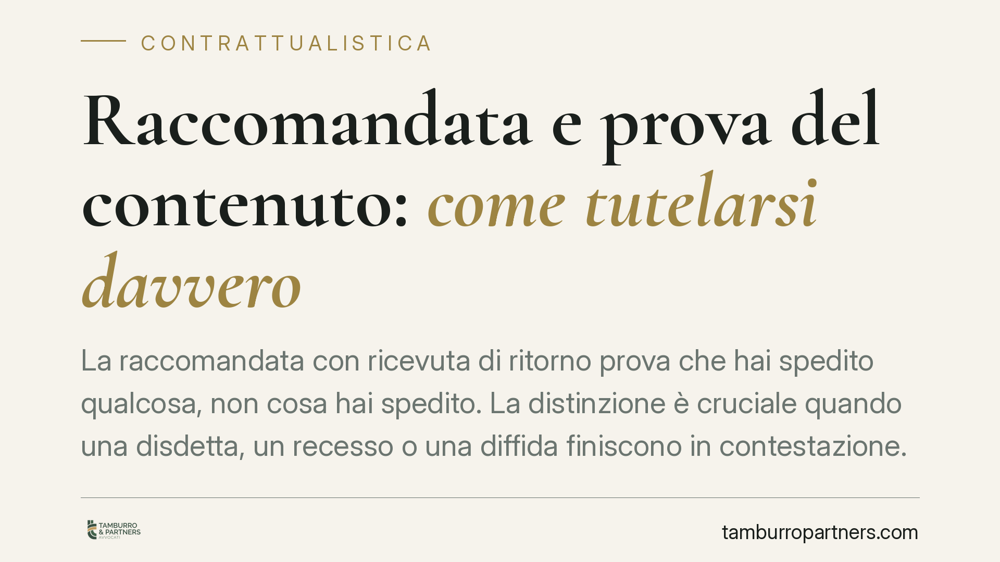

Raccomandata e prova del contenuto: come tutelarsi davvero
La raccomandata con ricevuta di ritorno prova che hai spedito qualcosa, non cosa hai spedito. La distinzione è cruciale quando una disdetta, un recesso o una diffida finiscono in contestazione. Esistono però tecniche precise per blindare anche il contenuto della comunicazione ed evitare che la controparte neghi di aver mai ricevuto quel preciso testo.

Il problema: invio provato, contenuto contestato
Immaginiamo il caso di Luigi, che invia alla propria compagnia di assicurazioni la disdetta del contratto entro i termini. Conserva la ricevuta di ritorno firmata. Mesi dopo l'assicurazione gli chiede i premi sostenendo che nella busta non c'era alcuna disdetta, ma un foglio in bianco.
Qui emerge il limite della raccomandata tradizionale. La ricevuta di ritorno attesta che una busta è stata consegnata in una certa data a un certo destinatario. Non attesta nulla sul contenuto di quella busta. In giudizio, di fronte alla contestazione, l'onere di provare cosa fosse stato spedito ricade su chi ha inviato la comunicazione.
Inquadramento
La raccomandata gode di una presunzione di conoscenza: ai sensi dell'art. 1335 del Codice civile, le dichiarazioni dirette a una determinata persona si reputano conosciute nel momento in cui giungono all'indirizzo del destinatario. La giurisprudenza di legittimità riconosce inoltre alla ricevuta di ritorno valore di prova della spedizione e della consegna.
La Cassazione ha però chiarito a più riprese che questa presunzione copre l'avvenuta consegna del plico, non il suo contenuto. Quando il destinatario contesta specificamente cosa fosse contenuto nella busta, il mittente deve fornire una prova ulteriore. E se ha spedito una normale busta chiusa, quella prova spesso non esiste.
Le comunicazioni a contenuto legalmente rilevante — disdette, recessi, diffide ad adempiere, costituzioni in mora — sono proprio quelle più esposte a contestazione, perché da esse dipendono effetti giuridici precisi e scadenze perentorie.
Le soluzioni che provano anche il contenuto
Due strumenti consentono di superare il problema.
Il primo è la cosiddetta raccomandata in foglio (o "raccomandata senza busta"). Il testo della comunicazione viene scritto direttamente sul foglio che, ripiegato e sigillato, costituisce esso stesso l'involucro della spedizione. Sull'oggetto della raccomandata l'ufficio postale appone timbro e data. In questo modo il contenuto e il contenitore coincidono: non è possibile sostenere che nella busta ci fosse un foglio diverso, perché busta e foglio sono la stessa cosa, timbrata dall'operatore postale.
Il secondo strumento è la PEC con testo incorporato nel corpo del messaggio. La PEC genera ricevute di accettazione e di avvenuta consegna che hanno valore legale e che certificano data, mittente, destinatario e contenuto del messaggio. Attenzione, però: la prova del contenuto è piena quando il testo rilevante è scritto nel corpo della mail. Se la comunicazione viaggia solo come allegato, la certezza sul contenuto si attenua, perché la gestione e l'apertura dell'allegato dipendono dal destinatario.
Implicazioni pratiche
Per chi deve esercitare un diritto entro una scadenza, la differenza è sostanziale. Anna, locataria che invia la disdetta del contratto di locazione, ha tutto l'interesse a poter dimostrare non solo che ha spedito qualcosa, ma esattamente quale testo ha inviato e in quale data. Lo stesso vale per chi intima un pagamento, contesta un inadempimento o recede da un accordo.
Una comunicazione formalmente corretta ma non difendibile sul piano probatorio espone al rischio di vedersi negata la tempestività o l'esistenza stessa dell'atto. Il costo di un metodo più rigoroso è minimo; il costo di una contestazione vinta dalla controparte può essere molto alto.
Cosa fare in concreto
- Per disdette, recessi e diffide, privilegiate la PEC con il testo scritto nel corpo del messaggio, non come semplice allegato.
- Se usate la posta cartacea, valutate la raccomandata in foglio, così che contenuto e involucro coincidano e siano timbrati dall'operatore postale.
- Conservate sempre ricevuta di accettazione e di avvenuta consegna della PEC, oppure ricevuta di ritorno e copia del testo spedito.
- Verificate i termini contrattuali sulla forma della comunicazione: alcuni contratti impongono modalità specifiche di invio.
- Annotate con precisione la data di spedizione: per le scadenze rileva spesso il momento dell'invio, non quello della ricezione.
Disclaimer
Contributo informativo a cura di Tamburro & Partners - Avv. Giuseppe Tamburro. Non costituisce parere legale.
Ogni contratto ha il suo equilibrio.
Se vuoi una revisione delle clausole o una redazione su misura, scrivi allo studio. Ti rispondiamo entro un giorno lavorativo.